Habit trackers are everywhere, yet most people abandon them within weeks. The common thread is that they're built around streaks and perfection. Miss one day and the streak resets to zero, the calendar fills with red, and the app starts to feel like a source of shame rather than support. For people already managing anxiety, ADHD, or burnout, that guilt loop is the exact reason they quit.
Design a mobile habit tracker that keeps people coming back by being kind. It should make progress visible and motivating without weaponising streaks — celebrating consistency, forgiving slips, and treating each small action as a win worth noticing.
Sole UX/UI designer — owning research, information architecture, interaction design, visual design, and the design system, end to end.
Competitive teardown, user interviews, persona and journey mapping, wireflows, low- and high-fidelity design, a usability study, and a reusable component library.
I started with a competitive teardown of six popular habit apps, then ran five 30-minute interviews with people who had tried — and mostly quit — habit trackers. I wanted to understand the emotional moment of giving up, not just the feature gaps. A short survey (32 responses) helped me sense-check how common those feelings were.
I assumed people wanted more powerful tracking — richer stats, smarter reminders. Interviews said the opposite. The people who quit didn't want more data; they wanted permission to be imperfect. The streak counter, meant to motivate, was the single most common reason they felt like a failure and deleted the app.
Resetting to zero after one missed day felt like erasing weeks of effort — so people stopped trying altogether.
Habits were marked simply done or not done, ignoring partial effort like 3 of 5 glasses of water.
Push notifications felt like a manager checking in, not a friend — guilt-laden and easy to mute.
Apps tracked behaviour but never asked how you felt, missing why habits actually slip.
Build a consistent morning routine, drink more water, and read before bed — without feeling monitored.
Has downloaded four habit apps. Each one made her feel worse the moment she missed a day, so she deleted them.
Responds to encouragement and visible-but-gentle progress. Wants to feel proud, not policed.
Design opportunity: the collapse happens on Wednesday — the first miss. If the app reframes that moment as “you're still growing” instead of “you failed,” the whole journey changes.
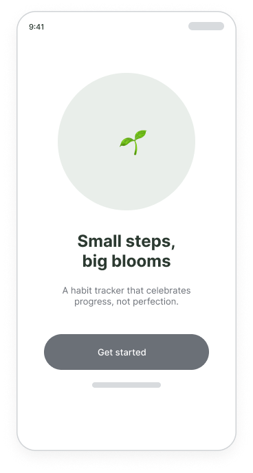
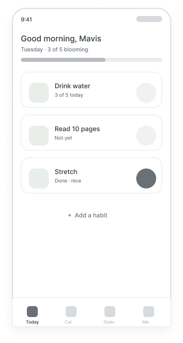
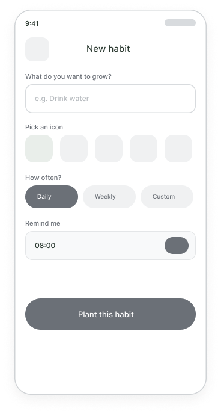
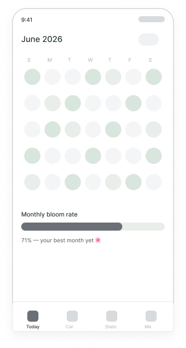
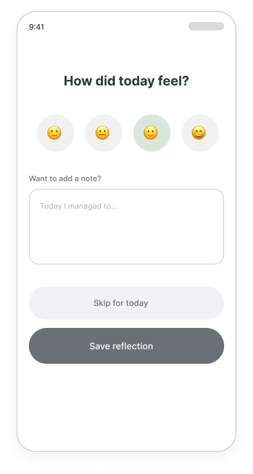
Even in greyscale, “streak lost” made two participants wince. I replaced it with “streak paused — pick it back up.”
Everyone gravitated to the “3 of 5” style habits, so I made partial progress a first-class state, not an edge case.
The end-of-day note was skipped by 4 of 5, so I cut it to a one-tap mood with the written note strictly optional.
Streak-first: a big number at the top, pass/fail rows, and a red “streak lost” banner on a miss.
Progress-first: a gentle bloom ring, “3 of 5” partial states, and “streak paused — pick it back up” instead of failure.
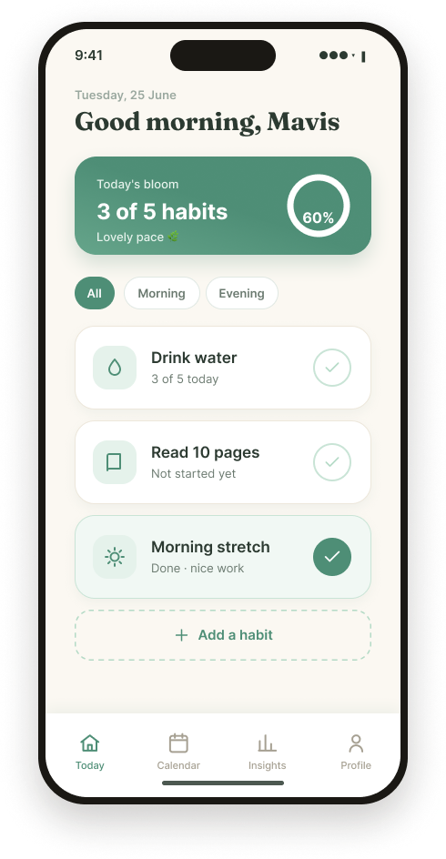
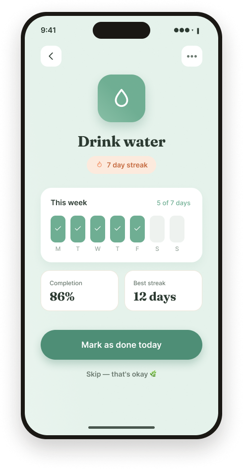
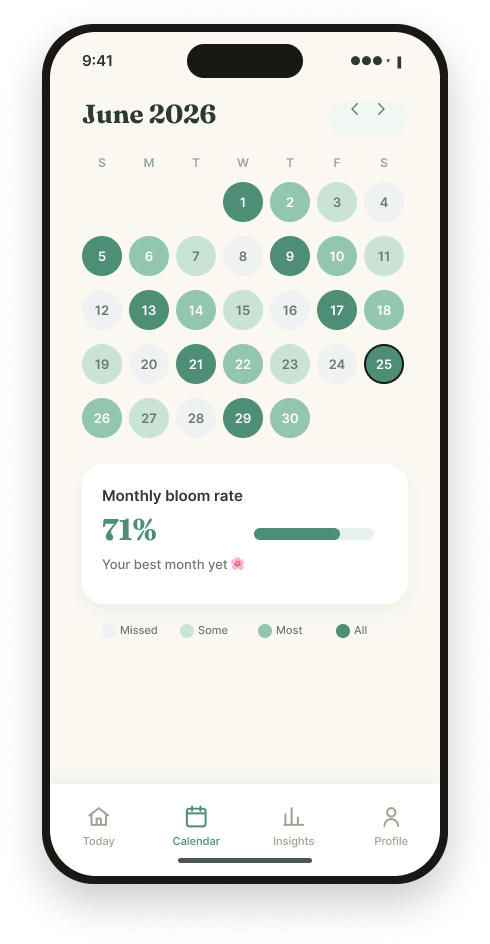
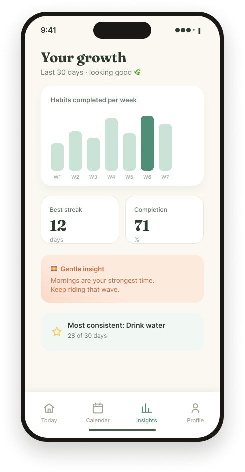
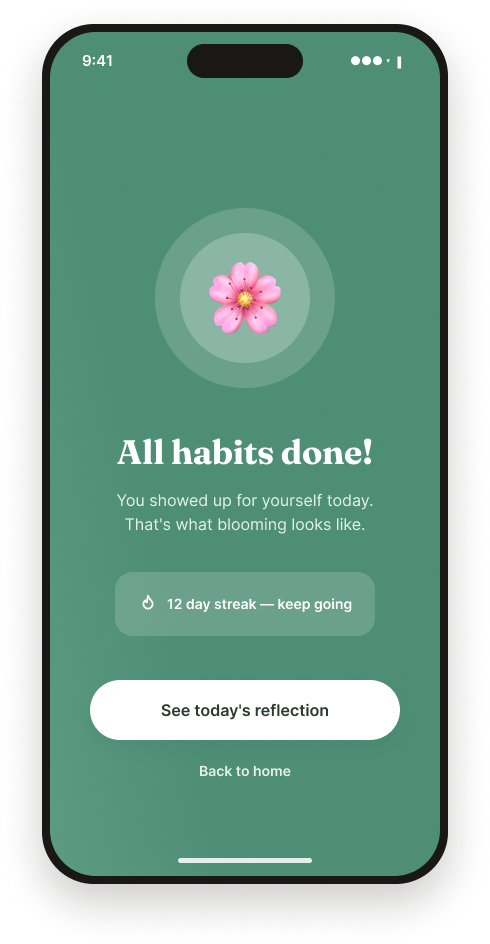
This is the screen the whole product is built around. In every other app, a missed day means a broken streak and a wave of guilt. Daily Bloom intercepts that exact moment — the Wednesday from Maya's journey map — and reframes it. The streak pauses instead of resetting, the copy reassures rather than scolds, and a single warm button invites you back without shame.
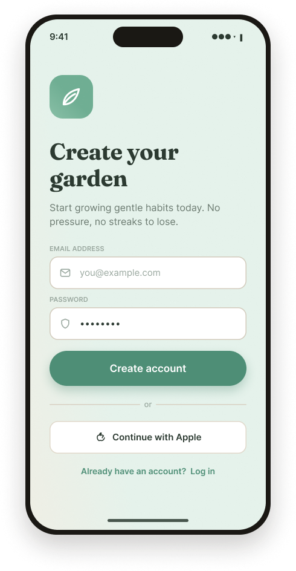
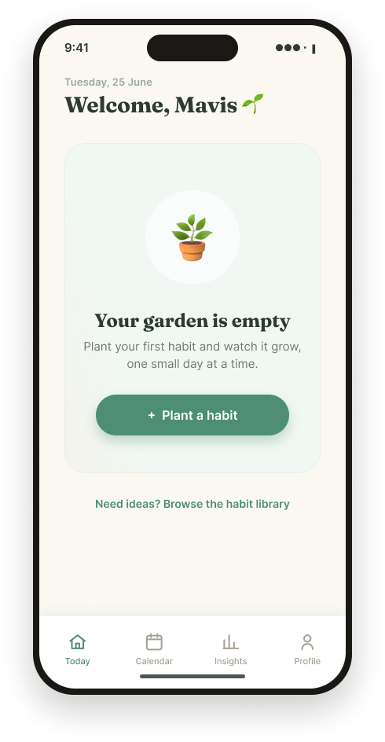
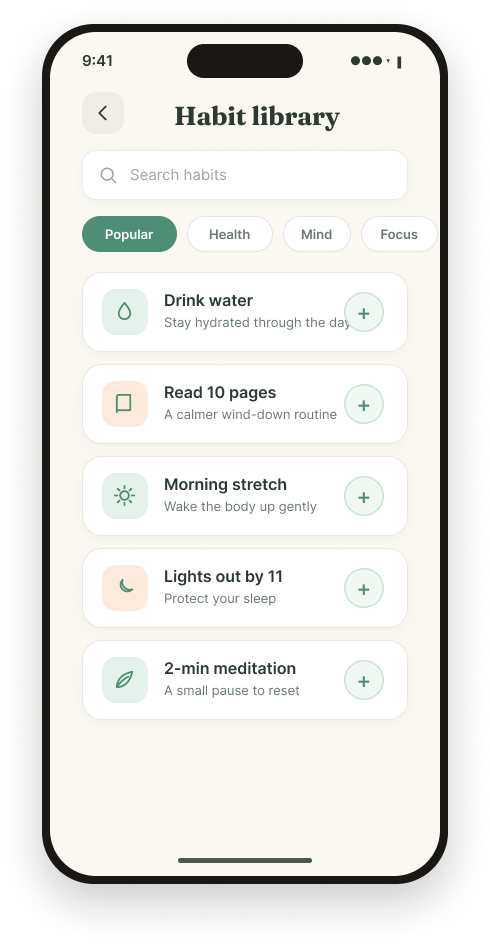
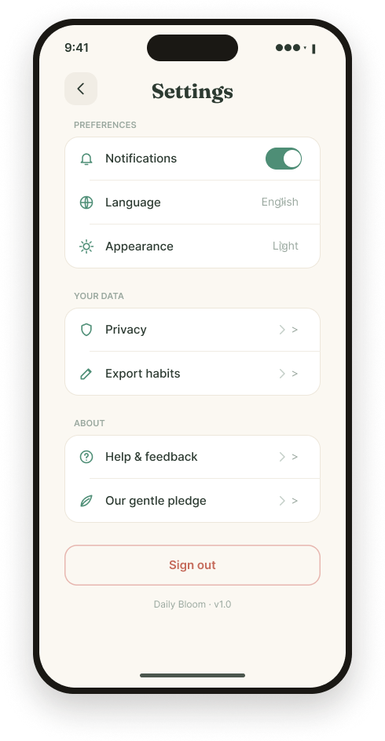
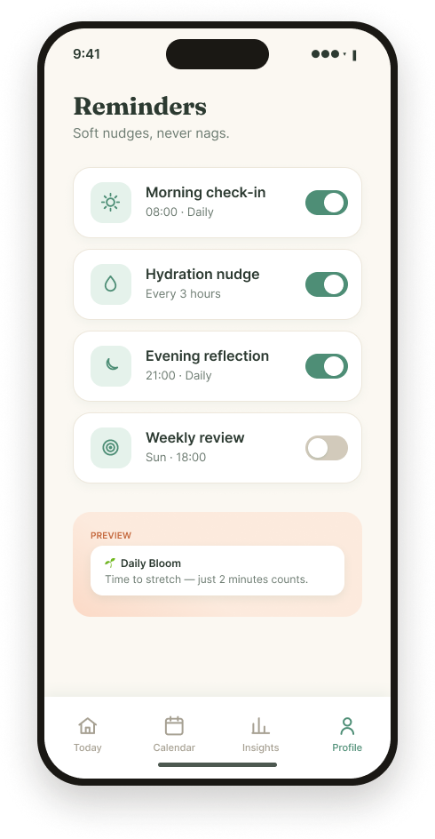
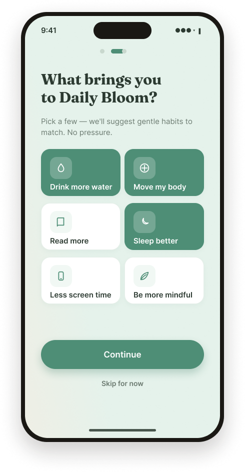
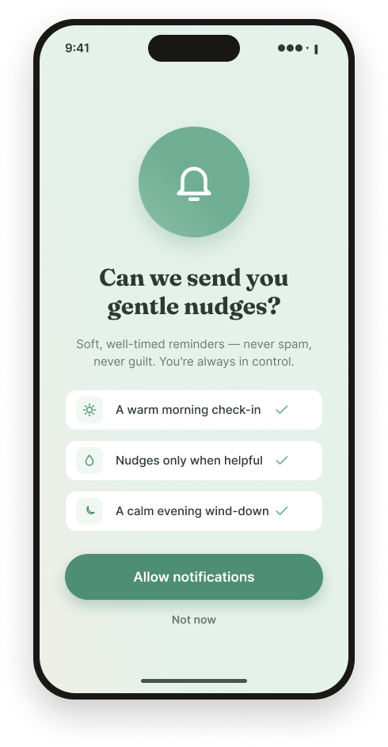
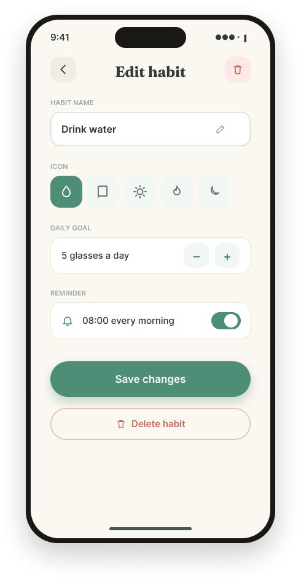
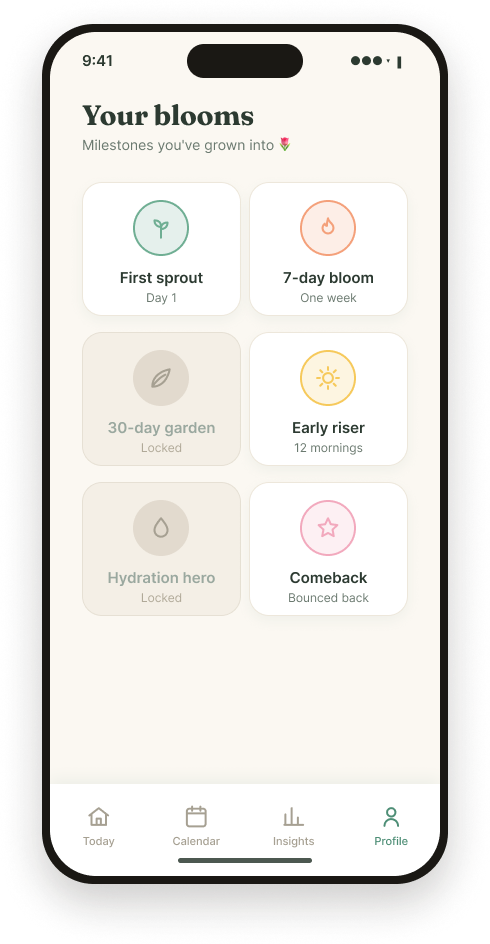
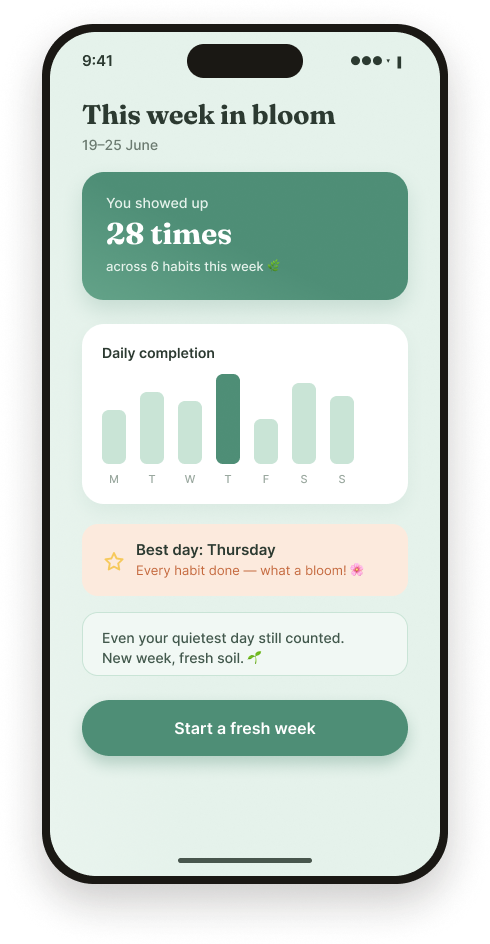
A missed day pauses your streak instead of resetting it. The number dims but holds, so one off day never erases weeks of effort.
Habits support “3 of 5” style targets. Doing some is always better than nothing — and the UI rewards it visibly.
Each day ends with a one-tap mood check-in. It adds the emotional context streak-counters ignore, with notes kept optional.
All text and key UI meet WCAG AA; the sage primary was darkened to pass on white.
Progress is never shown by colour alone — rings, labels and counts reinforce every state.
All interactive elements are at least 44×44pt with generous spacing.
Microcopy was written to reassure, avoiding shame language anywhere in the product.
The hardest part wasn't the visuals — it was resisting the urge to add streaks, badges, and pressure that “drive engagement.” Every motivational pattern I reached for had a guilt-shaped shadow. Interviewing people who'd quit kept me honest: the most motivating thing an app can do is make you feel capable, not watched. I also learned to treat copy as interaction design — “streak paused” versus “streak lost” is the entire product in two words.
Run a longitudinal test to confirm gentle streaks actually sustain habits better than hard streaks.
Use the mood data to time reminders for when a user is most receptive, not just at a fixed hour.
Optional, pressure-free “bloom with a friend” accountability without leaderboards or comparison.
Daily Bloom — a habit tracker that grows with you, gently.
Hsu Yee Mon (Mavis) · UX/UI Designer